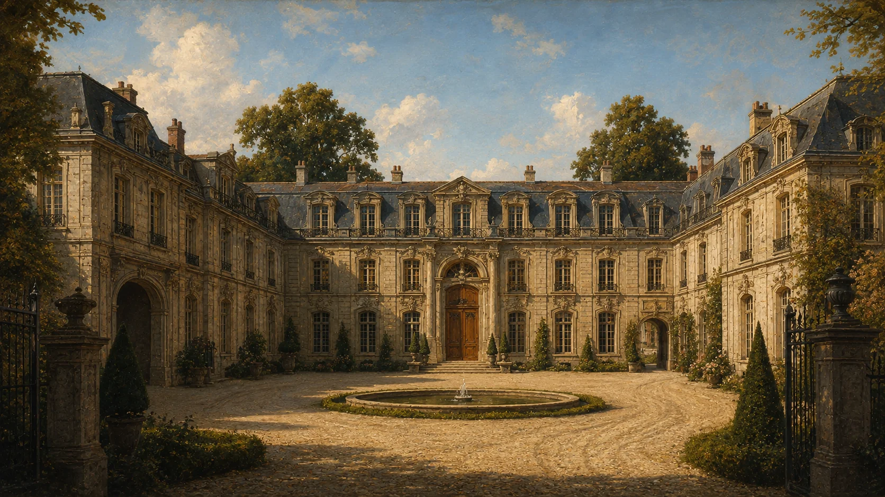

COUR D’HONNEUR
车道在这里回转。主楼后面，还有一座花园。
此处相连
可查看的物件
从正门进入主楼，或先在前院停留。
PLAN DE LA MAISON
北侧是花园，南侧通街道。点房间查看路线。
原创宅邸设计。淡色房间尚未开放；图册与立体模型共用房间、门与楼梯的位置。
L’HORLOGE DE LA MAISON
府里有自己的作息。伯爵会沿走廊换房间，也会外出。您可以去找他，或留在喜欢的地方。
由本地服务统一校时（UTC+8）。这是角色日程，不表示真人在线；刷新、换房间、修改链接都不会替伯爵改行程。断线超过九十秒时暂停人物互动，房间仍可参观。
府邸中的物件
LE COMTE
角色日程与预写导览，不是即时聊天或真人在线状态。
CARNET DE VISITE
本次看过的物件留在这里。刷新或离开页面后清空，不上传。